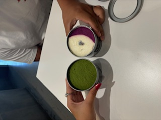
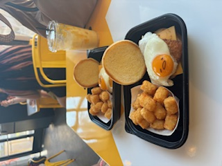
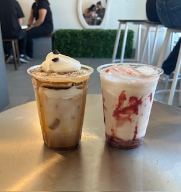
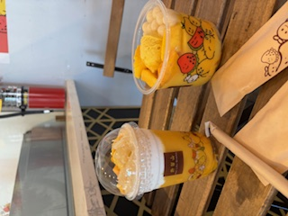
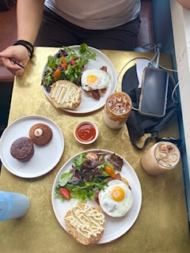
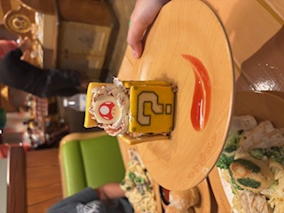
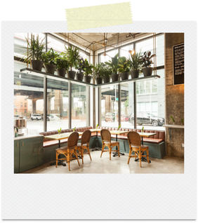

Good eats!






Top 3 Places
- Butler Cafe - Brooklyn, NY
- Dubbed a neighborhood favorite, this cafe serves breakfast, dinner, and lunch. My friend and I ended up here around 6:00 AM after a 5 hour bus ride. Her and I think this place is incredible, or perhaps we were just starving.
- Hui Lau Shan - Irvine, CA
- Hui Lau Shan is a dessert shop focused on mango items! Everything is mango-related and its curated menu is very unique.
- Gudetama Cafe - Buena Park, CA
- The Gudetema cafe is based on the popular sanrio character, Gudetama. For a character-cafe, the food was decent. The decor and attention to detail was the best part!
The breakdown...

| Restaurant | Food Rating | Drinks Rating | Decor Rating | Overall Vibe |
|---|---|---|---|---|
| Butler Cafe | 8.5 | 8.0 | 8.5 | 9.0 |
| Hui Lau Shan | 9.5 | 9.0 | 7.0 | 7.0 |
| Gudetama Cafe | 8.0 | 6.0 | 9.5 | 7.5 |
Final Remarks on Butler Cafe
Going to Butler in NYC was one of the most memorable meals! While the meal was from no michelin-star renowed place- the savory items, pastries, and drinks were solid. The cafe executed everything that they promised very well.
However, I will note that my friend and I were starving when we discovered this place. It was so early in the morning and so we searched "open cafes near me" and walked in the direction maps suggested. It is possible that this meal was not as phenomenal as it truly was, but rather a reflection of our hunger that morning.
Nevertheless, I absolutely adored this place! So much so, I wished for a second that I could pack up my life and move to NYC solely for this place. I'm already making plans to come back!